Wargaming
Tabletop Battles Reviews: Cities of Sigmar Fourth Edition Battletome
We’d like to thank Games Workshop for providing us with a review copy of this Battletome. We have also been provided with a provisional Battle Profile list for the army to use when writing the review, but please note that any points referenced in this review are subject to change until they are published on Warhammer Community.
The Cities of Sigmar represent the common people of the Mortal Realms. These aren’t superhuman immortal warriors, magically-enhanced Aelves or tough-as-nails Duardin, just regular folks like you and me with nothing but a blade in their hands and a prayer on their lips standing between them and the monsters that dwell in the Mortal Realms. Oh, and giant cannons. They’ve got a lot of those too.
As the former Age of Sigmar Island of Misfit Toys, the Cities of Sigmar used to be an eclectic mix of old Warhammer Fantasy units, representing the cosmopolitan nature of the titular Cities of Sigmar. Those units started getting phased out in favor of a new aesthetic and the notion that a Sigmarite army was essentially a walking fortress; walls of guns and iron that advanced up the board, dug in, and blasted away at whatever was in their path. The scales have since tipped fully towards the “fortress” idea with the new Gate Gargants and Cogforts, while all the old Warhammer Fantasy units have been sent to The Shadow Realm The Old World. This is still an army built around layering buffs onto otherwise unassuming units, then making them work together to accomplish your plans.
This has long been an army that relied on characters to distribute Orders, much like the Astra Militarum in Warhammer 40,000. This meant that Cities of Sigmar armies had a bit of a learning curve, often planning out who would give what orders to what units a turn in advance. They’ve since been streamlined, and while they’re likely more crucial than ever to the army, they’re in some ways more limited than before.
Form Up! Is the lynchpin of the entire Orders system. At the start of the Battle Round, you select one Cities of Sigmar unit and two friendly Cities units wholly within 12”, and those units are all "Under Orders". They have to be different unit types, so you can’t just double up on two of the same Warscroll. This doesn’t do anything on its own, but it keys off the rest of the Battle Traits, as well as a number of Warscroll abilities. As this is done at the start of the Battle Round, you’ll still want to be planning on who you want to use Order a turn in advance. Fortunately, you can keep using this rule as long you have different trios of units to pick, so you'll want to build and position your army around intentional trios to get the most out of them. It's almost like an echo of the old Empire Detachment system, but more flexible. There are also a few ways to get more units Under Orders once we dig into the Warscrolls.
Take Aim! Is used in the Shooting Phase, and gives one of your Under Orders units +1 to hit with shooting attacks for the rest of the turn. It’s a straightforward buff, and with how many of your guns hit on 4+, it’s a crucial improvement.
Sound the Attack! Goes off in your Charge phase, letting you pick an Under Orders unit then change the lowest die on their Charge roll to match the high die. It won’t help if you roll snake eyes, but it’s an interesting change from your typical flat bonus or reroll to Charge distance.
Into Them, You Dogs! Has you select a Hero in the Combat Phase, and they are now a Field Officer for the rest of the turn. They select two other non-Hero Under Orders units, with one becoming Inspirited and the other becoming Emboldened. The Inspirited unit can Fight immediately after the Field Officer, and the Emboldened unit can Fight after the Inspirited unit. It sets up a one-two-three punch, and if you can set up three units to Fight in a row, it can do a lot of damage. The writing has maybe too many keywords to easily parse, but the actual ability is likely how you’re going to actually kill things in the Combat phase. One of your units might not do too much on their own, but three in a row? That’s some real damage right there.
Hurl Them Back! Is far more straightforward. In the Combat Phase, an Under Orders unit gets +1 Rend with their melee weapons while in combat with an enemy unit that Charged. There are a few units that benefit from being Charged instead of doing the Charging (namely Gallants), so this synergizes well with them while still letting your crummy little Steelhelms maybe punch up once in a while.
Stalwart Guardians gives an Under Orders unit an extra 3 D6 while rolling Rally commands. It’s always good to get models back, and your units generally have banners, so replenishing a squad is a pretty easy prospect - provided they’re Under Orders. However, considering that you’ll typically be picking your heavier hitting units to be Under Orders to benefit from all those potential bonuses, you’re not as liable to select a damaged unit in the hopes that they survive long enough to use a Rally command.
Collegiate Exemplars adds 1 to Arcane Manipulation and Banishment rolls for Wizards that are Under Orders. What’s Arcane Manipulation you ask? It’s something that changes Warscroll by Warscroll, and each Wizard in the army has some sort of ability that uses it. Think of them like additional powers separate from your typical spells. If you really want to go all-out with Wizards, it’s a fun option.
Zealous Hordes lets you strike back at a unit that bashed one of yours. After an enemy unit uses a Fight ability on one of your own units, you can select that unit and add 1 to all Wound rolls made by your own Sigmarite units in the Fight phase. It only applies to one enemy unit and can only be used after that unit Fights, which can be kind of a tough prospect. It requires you to have multiple units tied up with an enemy unit so one can take the attacks and the second can benefit. If you’re going for a horde approach and can really bog down one big bad unit per turn that’s great, but Cities of Sigmar units often melt away in combat and this doesn’t help the gunpowder side of the army at all.
Dawnbringer Crusade simply lets you pick an Infantry or Hero unit wholly within friendly territory in your Hero phase, and has you move them 6”. If that unit’s in combat, it can move through enemy models, but has to end either in combat range with just the units it was engaged with, or out of engagement range entirely. Otherwise, it can just move 6” so long as it doesn’t move into combat with any enemy units. This is hugely versatile, letting you get out towards objectives early or escape from combat with enemy units that have you hemmed in, or even just get around screens early in the game. It also happens in the Hero phase, so there’s no option for a Redeploy from your opponent. This likely takes the cake as the best ability of the bunch, being versatile, broadly applicable, and easy to use.
There’s just three Heroic Traits here, and they go on any non-Cogfort Heroes.
Stentorian General subtracts 1 from enemy Ward rolls provided the target units are visible, wholly within 12” of your Hero, and also in combat with a friendly Under Orders unit. That’s a lot of hoops to jump through, but against an army that relies on Ward saves, a melee-centric Cities of Sigmar army could be a real headache with this Trait.
Beloved Leader ignores negative hit and wound rolls for friendly units wholly within 12” of your Hero and also Under Orders. It’s a good way to anchor a force and prevent situations where your troops are stuck hitting on 5+.
Grizzled Drillmaster (not to be confused with Drizzled Grillmaster, Castellan of Flavortown) doles out a 6+ Ward save to friendly units wholly within 12” of your Hero and also Under Orders. That’s a solid durability buff to friendly units, and if you can slap that bonus onto a Cogfort, you’ll really make it a headache to remove. This is probably the most generalist of these Traits, and one that’s an easy pick.
Bones of Saint Ignifus Gives +1 to a Casting or Chanting roll for an Under Orders unit wholly within 12”. It’s annoying that it requires Orders just to go off, and would have been more useful if it was just always on.
The Sphere Celestial is a wildly useful little teleport ability. Select a friendly Infantry or Cavalry Hero unit that is not in combat and is wholly within 18” of the bearer, then place the bearer and that unit on a target point anywhere on the battlefield provided it is more than 3” away from any enemy units or terrain features. This happens in the Hero phase and explicitly does not preclude you from moving in the Movement phase, so you can just yeet a beefy unit up the board, nab objectives, blast away at close range, or pull off a turn 1 Charge in your opponent’s backfield. An on-demand teleport that doesn’t keep you from moving, shooting, or charging is ridiculously powerful, especially compared to the other Artefacts here.
Prototype Arco-Combustor Inhibitor is a once per game get out of jail free card for one of your Cogforts, giving them +3” of movement, letting them Retreat without taking any Mortal Damage, and then Shoot afterwards. It can really get your Cogfort out of a bind, or just get that extra few inches of movement to get onto an objective. It also gets around the drawbacks of their built-in retreat ability by not generating any Heat Tokens.
Emergency Bellows removes 1 Heat Token at the end of any turn. We’ll get to the Cogfort Heat Token mechanic later, but managing that Heat is important to your Cogforts, and removing 2 Tokens per round is handy. This is a pretty safe bet, as you’ll always be managing Heat on a Cogfort.
Grapple-Net Launcher is another once per game ability, this time subtracting 1 from Attacks on an enemy unit in combat, provided your Cogfort didn’t charge that turn. With how durable Cogforts are, this can absolutely stonewall an enemy attack, especially on a large unit where you’ll be taking Attacks off every model.
The Spells of the Collegiate Arcane each tie more or less to one of the Wizard models in the Cities of Sigmar range, but aren’t locked to any of them. They’re a decent spread of mobility, damage output, and friendly unit buffs.
Speed of the Twin-Tailed Comet (CV6, unlimited) – This is a wide movement buff, adding 3” of movement to every non-War Machine Cities of Sigmar unit wholly within 12” of the caster. With a few wizards you could really get a whole army moving quickly.
Curse of Scorched Metal (CV7) – This picks a single enemy unit within 18”, and until the start of your next turn, the first time they make an Attack ability, each unmodified hit roll of 1 causes 1 Mortal Damage to the target unit. It’s a hilarious molten middle finger to cast on any large unit that relies on volume of attacks, and since it works on shooting and melee, it’s versatile as well.
High Star’s Light (CV6) – This is a simple attack buff, adding +1 Attack to melee weapons on a friendly unit wholly within 12” until the end of the turn. That’s not too shabby, even if it’s not as interesting as the other two spells.
The Scriptures of Sigmar are all support abilities, granting extra defense, wound regeneration, and a debuff to enemy Control Score to boot.
Holy Aegis (CV3, unlimited) – Make a D6 chanting roll and select a friendly Cities of Sigmar wholly within 12”. They ignore the first first point of damage that would be inflicted on them in each phase until the start of their next turn. On a 7+, you can pick a second unit. This is extra gnarly on Cogforts, where some armies will really depend on phase-over-phase chip damage to take them out.
Reckoning of Sinners (CV5) – Make a D6 chanting roll and select a friendly Cities of Sigmar wholly within 12”. Enemy units have a maximum Control Score of 1 while in combat with the unit. On a 10+ you can pick a second unit as well. This is a great way to shut down an objective, or two if you’re lucky.
Benediction of the High Heavens (CV3) – Make a D6 chanting roll and select a friendly Cities of Sigmar wholly within 12”. Heal D3 on the target, and on a 7+, Heal D3 every friendly visible unit wholly within 12” of the caster instead. Chanting just to bring a Steelhelm back isn’t too exciting, but keeping your Cogforts topped off or setting off a healing bomb in the middle of your army are both far more interesting prospects.
Interestingly, the Freeguild Command Corps has also been split into three units. This is a good compromise from the 3rd edition version of the unit, which had so many abilities on one scroll it could be hard to keep track of, but does deprive the army of one of its most notorious control pieces.
Tahlia Vedra is still your big heavy hitter here, riding a beatstick Monster in the form of Infernadine, plus some solid support abilities. Once per game in the Combat Phase, she can use her Lead From the Front ability to give +1 to hit and wound rolls for every friendly Sigmarite unit wholly within 12”, covering a pretty massive area. Paralysing Venom is a Rampage that has you roll a D6 while in combat with an enemy unit, and if you roll below their Health characteristic, they have to subtract 1 from their wound rolls for the rest of the turn. Considering most Monsters have significantly more Health than you can roll on a D6, that’s a pretty surefire way to protect yourself while fighting your opponent’s big centerpieces. Lastly is Combat Tactician, letting you select a Sigmarite Infantry unit wholly within 18”, letting them make a Normal Move, and then putting them Under Orders. Considering how important Orders are to making this army work and how few you get per turn, this is low-key her most important ability. She’s especially useful in an Infantry-heavy army this way, and it also lets you range out a little instead of having to bunch everybody up around a foot Marshal or something.
Pontifex Zenestra is a Priest (2) as you’d expect. She basically doles out the old Flagellant rule to any Sigmarite units wholly within 12” with her The Great Wheel Turns ability. When those models are killed in combat, make a Zealotry roll of D6 for each point of Health that model had. For each 6+, the attacking enemy unit takes a point of Mortal Damage. That’s obviously useful on cheap Steelhelms who can die in droves and cause some damage, but could also work on exploding cavalry or a Cogfort toppling onto an enemy unit. She’ll be best served by chanting her Warscroll prayer, Vessel of Sigmar, which can either add 1 to those Zealotry rolls, make enemy charging units within 9” Strike Last, or roll a D3 for every enemy Wizard and Priest on the field, and on a 2+, causing that much Mortal Damage. The only bit of dissonance is between her main ability suite and the Prayers available to this army, most of which emphasize survivability. She wants your units dying in droves to do their most damage, while most abilities in this Battletome try instead to keep your models alive. Stalwart Guardians is weirdly the Battle Trait she wants more than the faith-themed one, as it’ll do more good to get models back so you can toss them back into the grinder.
Jorvan Kreel, Heir of the Kraken is our new ranger character, essentially being Drizzt Do’Urden and Geralt of Rivia at the same time. He’s got a flurry of 6 damage 2 attacks, but after attacking, either Jorvan or a friendly non-Hero Infantry unit within 12” can redeploy within 6” of where they started and 3” away from all enemy units, making for an annoying little skirmisher who can scoot away before getting hit. He’s also got a cool ash panther named Thexa who can cause the standard D3 Mortal Damage on a 2+, but when used on an enemy unit, they can no longer score Critical Hits, counting as normal hits instead. That’s a hugely inconvenient debuff for some units. He’s missing an Infiltrate ability of his own, but he’s meant to run with Wildercorps Hunters who can bring him along to serve as an annoying little vanguard.
Erasmus Zonn, the Enlightened One is a Wizard (1) and can happily cast any of the spells in the Spell Lore, though he’s got his own spell to teleport himself in the Hero phase wholly within 9” of a table corner and more than 3” from enemy units. That’s decent for scoring some secondary objectives and is key to his main ability, Lantern of All-Knowledge. While in a table corner, he can make himself and friendly units within 6” invisible to enemy units outside 6”, add 1 to his own power level, add 2 to Arcane Manipulation rolls, or crank up his Rod of Radiance weapon with extra Attacks and Damage. This makes him a particularly scary shooting unit, but with only 10” of range he’s not going to have an easy time meeting all those criteria at once. Lastly, he’s got an Arcane Manipulation ability called Realmsphere Mastery that can target an enemy Manifestation within 12” that wasn’t set up this turn. If he rolls equal or above that Manifestation’s banishment roll on 2D6, you can set up your own Endless Spell in its place and banish the old one. Killing two birds with one realmstone like that is pretty notable, and unlike his other abilities, doesn’t depend on him being in a table corner. All this makes for a pretty powerful shooting unit and support caster, albeit one largely limited to the table corners where there isn’t as much action.
Galen and Doralia ven Denst celebrate bring your daughter to work day in style, hunting Wizards and Manifestations. Their weapons aren’t quite reliable enough to take out those targets on their own, but more importantly they can pick a friendly Sigmarite unit Under Orders within 12” and give them +1 Damage with combat attacks against Wizards, Priests, and Manifestations. While the days of Krondspine spam are behind us, tearing down Manifestations and Wizards with a mob of Damage 3 Gallants is very appealing. Units like this suffer from some matchups where their targets straight up don’t appear at all though, and if you’re up against an army without much in the way of Wizards or Priests, this pair really struggles to be of much use.
Callis and Toll are a pair of Hero hunters, picking an enemy Hero at the start of the game to be their Mark. Their melee weapons do double damage against the Mark, cranking them up to 4 damage per swing. Their weapons are also Anti-Wizard (+1 Rend) so if you’ve got a big bad enemy Wizard to worry about like Archaon or Teclis, they’re an especially fun pick, and have enough general use that they should be more broadly useful than the ven Densts.
Toll’s Companions are a package deal with Callis and Toll, giving both units the ability to deploy in In the Shadows. Instead of deploying as usual, in your Movement phase they set up more than 6” from the Mark and 9” from any enemy units. The Companions also give a 5+ Ward Save to Callis and Toll, getting the same in return. This means you can set up a nasty cruise missile of a unit, dropping 6” away from their Mark and making an easy charge into them whenever you’d like. Even with that Ward Save they probably won’t survive long after, but they provide a backfield threat your opponent will have to screen for.
Freeguild Cavalier Marshals are the rare model that supports friendly units without needing them to be Under Orders as well. He’s a decent enough combat character, at least for a regular guy on horseback, but his real power is in how he helps your Cavaliers. Firstly, if you successfully Counter-Charge with him, you can select a Sigmarite Cavalry unit wholly within 12”, and provided it didn’t Run that turn, that unit can Charge, and they get a re-roll on Charge distance to boot. Additionally, he can pick himself and 2 other non-Hero Sigmarite Cavalry units that charged, and provided they’re also wholly within 12”, they can make a pile-in move and maybe cause some mortal damage. He’s great for setting up a counter-charge behind your front line, not necessarily leading the charge from the front but reacting to enemy units getting into your grill. Even if Cavaliers and the Marshal aren’t the hardest hitting cavalry in the game, if your opponent was just expecting Fusiliers in melee, they’ll be sorely disappointed.
Freeguild Marshal and Relic Envoy is a standard foot Hero who isn’t especially tough or strong, but has some decent support abilities. First, they can hand out an extra Order to a unit within 18” using their Relic Envoy, which as we’ve already established, is pretty important. Second, once per game, an Infantry or Monster unit with the Relic Envoy can Fight immediately after the Marshal, also getting to Fight twice that phase. Their second Fight ability has Strike Last, but doubling up with your Gate Gargants, Tahlia Vedra, or just a big ol’ brick of Gallants can put out a wild amount of damage. They’ve also seen their profile flattened, and now they always get Duelling Pistols and a Master-forged Weapon, no need to choose their gear.
Mallus Forgepriests are your basic Priests on foot, chanting one Prayer per turn and Consecrating objectives. If the Priest is contesting an objective with no enemy models on it and you control it, it’s Consecrated, or on a 3+ if there are enemy models on it. Until your opponent controls said objective, all friendly Sigmarite War Machines gain a 6+ Ward Save while wholly within 6” of the objective, and all other friendly Sigmarites gain a 5+ Ward Save. This is a great way to spread some durability around, especially if you can get him up the board to Consecrate some objectives in No Man’s Land. These also combo well with your Prayers to make your units even more durable, and it should become pretty easy to give the bulk of your army a Ward Save of some variety.
Alchemite Warforgers are simple Wizard (1) casters who can roll a D6, and on a 3+ give melee weapons to a friendly unit within 12” Crit (Mortal) until your next turn. It’s a simple, solid buff that turns all those dinky Rend - and Rend -1 melee weapons in your army into something with more teeth.
Amethyst Knellmages are new, another Wizard (1) built around shutting down Commands. Their Warscroll spell, Deathly Candlelight, is a CR7 spell that disables Commands on an enemy unit within 12” for the rest of the turn. On a 3+, they can target a unit 18” away instead.
Credit: Gary Askham - Instagram: @heroes_guild_e17
Aqshian Pyrocasters are the last of these basic Wizard (1) Heroes, instead focusing on doing damage over time. Their spell, Incandescent Incineration, is a CR6 spell that causes D3 Mortal Damage and causes the target to be Incandescent. If cast on an Incandescent unit, they take a flat 3 damage points, with no Ward rolls allowed, and they’re no longer Indandescent. On an Arcane Manipulation roll of 3+, they can target enemy units within 18” instead of just 12”. It’s a fun setup and knockdown mechanic, but a canny player will either try and move outside of your range for that second Incandescent Incineration spell, or simply kill your extremely squishy wizard. Since it’s also not an Unlimited spell, you also can’t just have two Pyrocasters doubling up on a single target.
Fusil-Major on Ogor Warhulk is still a solid supporting character, and also not too bad at shooting and melee. Their Long Fusil is still decent for plinking wounds off Characters, and they can give +1 to hit against an enemy unit within 24” for all friendly units Under Orders. With how many of this army’s otherwise great weapons hit on a 4+, this is a massive boost to shooting output, especially if you can line up two or three shooting threats into an important enemy unit.
Freeguild Command Corps Adjutants are one third of the newly divided Freeguild Command Corps, and you must take all three when you take any of them. For the proper noun enthusiasts out there, this is the Arch-Knight, Great Herald, and Mascot Gargoylian. Once per turn, on a 3+, they add 5 to the control score of a friendly unit wholly within 12”. It’s not super exciting and they don’t do anything else of note, but could maybe flip an objective.
Freeguild Command Corps Auxiliaries consist of the Soul Shepherd and War Surgeon. This pair of weirdos messes with healing, with the Soul Shepherd disabling healing abilities on an enemy unit within 18” on a 3+, while the War Surgeon picks a friendly non-War Machine unit, and on a 3+ returns D3 dead infantry models, 1 cavalry model, or heals D3 wounds on a Hero or Monster. The 3+ roll is kind of annoying, but this is a fun pair for messing with casualties on both sides of the board. Against Death armies, the Soul-Shepherd is extra annoying, but with only 3 Health and a 6+ save per model, these will fold quickly.
Freeguild Command Corps Whisperblade rounds out the newly divided Warscroll, essentially working like Assassins did in old Warhammer Fantasy. If they’re within combat range of a friendly Infantry unit with 3 or more models, the Whisperblade straight up cannot be targeted with ranged or melee attacks. Unfortunately with only 4 attacks, only wounding on 4+, they’re not liable to do all that much damage, even if they’re safe from reprisal.
Freeguild Steelhelms are your bread and butter infantry, and are still largely there to hold objectives and die so your more valuable guns can keep firing. They lost their old ability to Consecrate ground (that went to the Mallus Forgepriest) and instead have a new ability, Steel of Helm and Heart. Provided you have at least 5 models in the unit, they pick a unit they’ve engaged in combat and on a 4+ (or 5+ if it’s a monster) then that unit must pile in and attack this unit. If they're Under Orders, it happens automatically. It’s a coin toss without Orders, but the notion of forcing attacks on these idiots instead of your more valuable units in combat is a good one. This is a potentially powerful means of wasting your opponent’s attacks, especially if it goes off on one of their more elite units. It's worth jumping through that Orders hoop to make it happen.
Credit: Gary Askham - Instagram: @heroes_guild_e17
Freeguild Gallants take the old role of Greatswords, Dreadblades, and all the other platemail infantry with decent weapons. At 2 Health and a 3+ save, these knightly infantry are a solid, durable anvil to build your army on, serving as an anchor at the center of your line. They gain +1 to their Attacks and Damage on turns they don’t charge, and while Under Orders, every other non-Gallant Sigmarite unit gains Anti-charge (+1 Rend) while wholly within 12” of this unit. It’s a hefty amount of anti-charge tech, and they really want to stand out in the middle of your line, taking charges, hitting back hard, and inspiring everybody nearby to hit back even harder. Of all your melee options, these are the guys and gals who will benefit most from being Under Orders, especially Hurl Them Back! And Into Them, You Dogs!
Freeguild Grenadiers are a new melee-shooting combo unit, less durable than Fusiliers but with shorter ranged weapons and decent melee output. They’ve got access to fairly inaccurate but dangerous Bardiches in melee, as well as a flamethrower-touting Cindergout. That model can pick a terrain feature or objective contested by your Grenadiers, then every enemy unit on it takes D3 Mortal Damage on a 2+. That can spread a load of damage around, and this unit can easily move up, pepper some shots at an enemy unit, charge onto an objective, do a bunch of damage in melee, then burn everything around them. Cities of Sigmar don’t have a ton of units who are threatening in multiple phases like this, and causing damage - even if it’s just chip damage - in multiple phases can be extremely useful for taking down bigger targets.
Freeguild Fusiliers saw a remix of their old Fortified ability. Now when they’re Under Orders they subtract 1 from the Rend of incoming attacks (shooting and melee) and can shoot in combat with their Fusil-Cannons. Those also were simplified - now they just get 1 shot at 18” instead of the previous 2 shots, but wound on a 2+ now at Rend 2. Their Squire can also be burned to give them an extra point of Rend for one round of shooting, which is a load more useful than the old single reroll. What they lose in volume they make up for in quality, and if you can boost their accuracy they can become rather frightening.
Wildercorps Hunters are another mixed melee and shooting unit, having had their rules completely remixed since the Faction Pack. They lost their old Arbalest and the dogs got a little less toothsome in melee, they no longer have a pre-game move, and they also don’t get that boost to Rend when shooting from a piece of terrain. However, now they Scout Ahead, letting them deploy in reserves and arrive within 9” of a battlefield edge and more than 9” from any enemy units. They can also bring a pair of non-Monster, non-War Machine units along, letting you flank with your Wildercorps and some supporting units. The obvious pick is to bring along Jorvan Kreel, as his abilities sync up pretty well with theirs, and maybe some Grenadiers for a mobile shooting threat.
Freeguild Cavaliers are the only non-Hero cavalry in the army, and still suffer from only wounding on 4+, even if they do get Damage 2 on the Charge. They lost their impact hits, but they do get a built-in ability to cycle charge called Storm of Steel. If they’re engaged with an enemy unit and Under Orders (or on a 3+ if they’re not) they and a Freeguild Cavalier-Marshal within their combat range can immediately make a Charge move into another enemy unit. If they still caused impact hits this would be a far sight better, but means they can charge into some chaff unit then run off into something more advantageous the next Charge phase, staying mobile and keeping that Damage bonus going. They’re still best for clearing stragglers and taking out screens, with their ability to ping pong around keeping them from getting bogged down.
Credit: @badusernametag
Ironweld Great Cannons lost their Grapeshot but gained an extra cannonball shot for their troubles. They dropped to just 6 Health, and like with the Fusiliers, they lost their old Fortify Position ability. On the plus side, they gained a pinning effect. On a 3+ (or 2+ if they're Under Orders) then a unit they shot at subtracts 2 from charge and run rolls til your next turn. They absolutely need the Fusil-Major’s hit buff or a Take Aim! Order to make up for their dismal 4+ hit rolls, and given their variable D3+2 damage and the extra dieroll needed to see if they pin their target, it all makes for a pretty unreliable unit, especially compared to the other War Machines on offer.
Both of these Cogforts are insane, with 25 wounds and a 3+ save. They also share some of the same weapons, with their Crushing Iron Feet causing 4 Damage per attack, as well as the Crew’s Leadshotters offering them some Shoot in Combat support. They’ve also both got the Overheating mechanic, wherein they build up Heat Tokens based on the actions on their Full Power and Full Throttle tables. Then after resolving that table, you roll a D6 for each token accumulated, and on each 5+, take a point of damage with no Ward Saves allowed, then remove a token. This is a fun mechanic, and one that can definitely punish you for going too hard, as that damage is resolved in the Hero phase. They’re also available in both player turns, letting you react to whatever the situation calls for while also potentially causing yourself even more Heat and even more damage. Cogforts are also both Hero units, letting them take the Ironweld Innovations Enhancements, but more crucially that gives your opponent an easier means of damaging them. There’s more anti-Hero tech than anti-War Machine tech out there, so keep that in mind while protecting your walking castles.
Cannonade Cogfort is the longer ranged variant, loaded up with an anti-infantry Breacher Cannon and an anti-everything-else Godbreaker Cannon. This is the rare Damage 4 ranged weapon, which is frankly kinda nuts on its own, but if this thing is Under Orders you can buff that Godbreaker even further. On a 3+, it can either subtract 1 from Ward Rolls, go up to Rend -3, or do D3 mortal damage on every enemy unit in combat range of its target. As for its Full Power table, for 1 Heat Token it can reduce hit rolls by 1 against friendly Under Orders units wholly within 12”, for 2 it can move 10”, for 3 it can re-roll a hit and wound roll for the Godbreaker Cannon, and for 6 it can Shoot after Retreating. Protecting your surrounding units for a single Heat Token is solid, but you’ll be using that hit buff one more often. Having an escape plan built in is also extremely useful for keeping your guns firing and your Cogfort safe, just mind the 6 Heat it generates..
Conqueror Cogfort trades some firepower for cargo capacity and a giant 6D6 shot flamethrower. One Sigmarite Infantry unit and one Sigmarite Infantry Hero can be loaded up inside. They pile out within 6” during any Charge phase, and that can put them into combat with enemy units, in which case they have Charged and they’re Under Orders. Dump out a wall of Gallants and a Hero to hold the line in front of Howl’s Shooting Castle here, then keep on trundling along and burnintating the countryside. The Full Charge table resembles the other Cogfort table, but with a few changes. For one Heat Token, those infantry piling out get +1 Damage on the charge, which is a great pick every time. It too has a 10” move for 2 Heat Tokens, and for 3 Tokens you can gain 2 attacks to both the Crew’s Leadshotters and Crushing Iron Feet. For 4 tokens you can automatically fire 22 shots with the Realmscorcher Flame Cannon, but the average roll for 6D6 is 21, so unless your dice are extremely cold that day it’s not worth the Heat. Lastly is the same ability to Retreat and shoot for 6 Heat Tokens, which is always handy to keep from getting locked down. You’ll generally be using that first ability the turn you disembark your cargo, then the 3 Token ability once you’re actually getting stuck in.
Alternatively, you can just take 4 Cogforts and pretend you’re playing Imperial Knights; the world’s your oyster.
With the removal of every Aelf and Duardin unit from the book, this is your way of getting that Grand Alliance flavor back into the army. You’re allowed to take any non-unique Sigmarite units, as well as Auric Hearthguard and Vulkyn Flameseekers from the Fyreslayers, plus Vanari Auralan Wardens and Vanari Auralan Sentinels from the Lumineth. Of course, for each of those units you take, you need to take a Sigmarite unit as well. You get to put units Under Orders, and while you don’t get access to the default Orders here, when the various allied units are Under Orders they get some kind of unique bonus. These are unexpected abilities, like every Auric Hearthguard critical hit with their ranged weapons reducing the movement of their target unit (cumulatively with no minimum!), or the Flameseekers literally defanging a Monster in combat and reducing the Damage of Companion Attacks by 2. The Vanari abilities are more situational, removing charge bonus damage against the Wardens and extending the range of Sentinels, albeit with a hit debuff. If you form the Triforce and have one of each (Sigmarite, Duardin, Aelf) unit wholly within 12” of one another, you get the Forces of Order ability. All three units get a 5+ Ward against shooting, add 3 to their control score, and get +1 to wound in combat. It’s tricky to set up but a wild set of buffs that will absolutely beef up your otherwise merely okay infantry. The suite of enhancements, spells and the like tend to mess with objective control scores (yours and your opponent’s) while also letting you redeploy more effectively and spread more instances of Under Orders around. The challenge with this regiment is finding unique roles for those allied units that aren’t just covered by your bevvy of Sigmarite units already, but the wide-ranging bonuses from Forces of Order certainly make a case for putting that together.
Have any questions or feedback? Drop us a note in the comments below or email us at contact@tabletopbattles.com. Want articles like this linked in your inbox every Monday morning? Sign up for our newsletter. And don’t forget that you can support us on Patreon for backer rewards like early video content, Administratum access, an ad-free experience on our website, and subscriber-only content covering competitive Warhammer 40K!
The Cities of Sigmar represent the common people of the Mortal Realms. These aren’t superhuman immortal warriors, magically-enhanced Aelves or tough-as-nails Duardin, just regular folks like you and me with nothing but a blade in their hands and a prayer on their lips standing between them and the monsters that dwell in the Mortal Realms. Oh, and giant cannons. They’ve got a lot of those too.
The Army
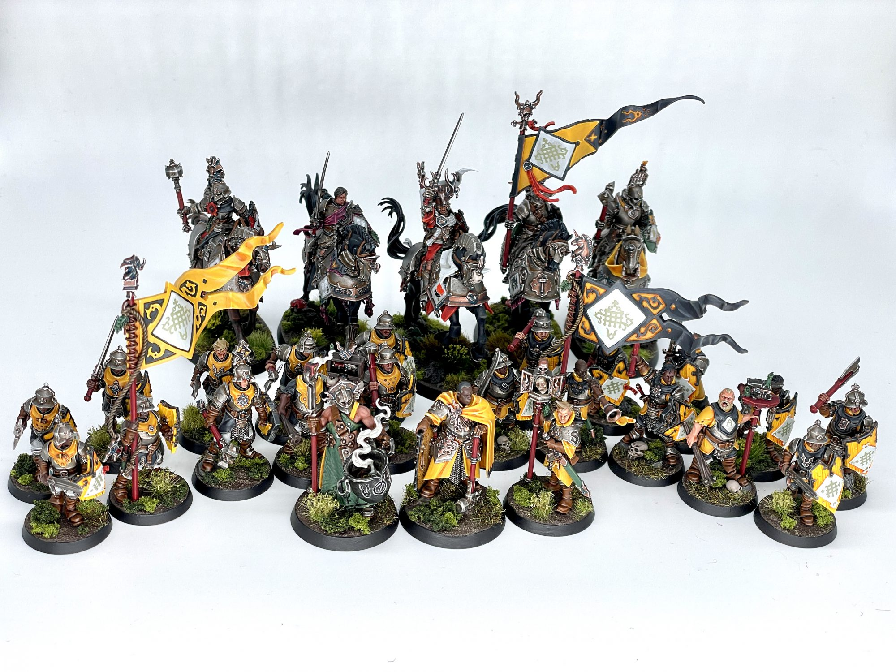
Cities of Sigmar Launch Box. Credit: SRMAs the former Age of Sigmar Island of Misfit Toys, the Cities of Sigmar used to be an eclectic mix of old Warhammer Fantasy units, representing the cosmopolitan nature of the titular Cities of Sigmar. Those units started getting phased out in favor of a new aesthetic and the notion that a Sigmarite army was essentially a walking fortress; walls of guns and iron that advanced up the board, dug in, and blasted away at whatever was in their path. The scales have since tipped fully towards the “fortress” idea with the new Gate Gargants and Cogforts, while all the old Warhammer Fantasy units have been sent to The Shadow Realm The Old World. This is still an army built around layering buffs onto otherwise unassuming units, then making them work together to accomplish your plans.
Battle Traits
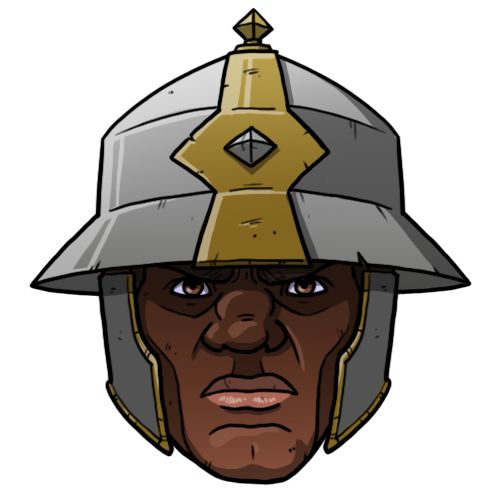
This has long been an army that relied on characters to distribute Orders, much like the Astra Militarum in Warhammer 40,000. This meant that Cities of Sigmar armies had a bit of a learning curve, often planning out who would give what orders to what units a turn in advance. They’ve since been streamlined, and while they’re likely more crucial than ever to the army, they’re in some ways more limited than before.
Form Up! Is the lynchpin of the entire Orders system. At the start of the Battle Round, you select one Cities of Sigmar unit and two friendly Cities units wholly within 12”, and those units are all "Under Orders". They have to be different unit types, so you can’t just double up on two of the same Warscroll. This doesn’t do anything on its own, but it keys off the rest of the Battle Traits, as well as a number of Warscroll abilities. As this is done at the start of the Battle Round, you’ll still want to be planning on who you want to use Order a turn in advance. Fortunately, you can keep using this rule as long you have different trios of units to pick, so you'll want to build and position your army around intentional trios to get the most out of them. It's almost like an echo of the old Empire Detachment system, but more flexible. There are also a few ways to get more units Under Orders once we dig into the Warscrolls.
Take Aim! Is used in the Shooting Phase, and gives one of your Under Orders units +1 to hit with shooting attacks for the rest of the turn. It’s a straightforward buff, and with how many of your guns hit on 4+, it’s a crucial improvement.
Sound the Attack! Goes off in your Charge phase, letting you pick an Under Orders unit then change the lowest die on their Charge roll to match the high die. It won’t help if you roll snake eyes, but it’s an interesting change from your typical flat bonus or reroll to Charge distance.
Into Them, You Dogs! Has you select a Hero in the Combat Phase, and they are now a Field Officer for the rest of the turn. They select two other non-Hero Under Orders units, with one becoming Inspirited and the other becoming Emboldened. The Inspirited unit can Fight immediately after the Field Officer, and the Emboldened unit can Fight after the Inspirited unit. It sets up a one-two-three punch, and if you can set up three units to Fight in a row, it can do a lot of damage. The writing has maybe too many keywords to easily parse, but the actual ability is likely how you’re going to actually kill things in the Combat phase. One of your units might not do too much on their own, but three in a row? That’s some real damage right there.
Hurl Them Back! Is far more straightforward. In the Combat Phase, an Under Orders unit gets +1 Rend with their melee weapons while in combat with an enemy unit that Charged. There are a few units that benefit from being Charged instead of doing the Charging (namely Gallants), so this synergizes well with them while still letting your crummy little Steelhelms maybe punch up once in a while.
Battle Formations
The Battle Formations each stick to a general Sigmarite archetype without necessarily being tied to a single City from the lore. A couple of these also key off of the Under Orders ability from the Battle Traits.Stalwart Guardians gives an Under Orders unit an extra 3 D6 while rolling Rally commands. It’s always good to get models back, and your units generally have banners, so replenishing a squad is a pretty easy prospect - provided they’re Under Orders. However, considering that you’ll typically be picking your heavier hitting units to be Under Orders to benefit from all those potential bonuses, you’re not as liable to select a damaged unit in the hopes that they survive long enough to use a Rally command.
Collegiate Exemplars adds 1 to Arcane Manipulation and Banishment rolls for Wizards that are Under Orders. What’s Arcane Manipulation you ask? It’s something that changes Warscroll by Warscroll, and each Wizard in the army has some sort of ability that uses it. Think of them like additional powers separate from your typical spells. If you really want to go all-out with Wizards, it’s a fun option.
Zealous Hordes lets you strike back at a unit that bashed one of yours. After an enemy unit uses a Fight ability on one of your own units, you can select that unit and add 1 to all Wound rolls made by your own Sigmarite units in the Fight phase. It only applies to one enemy unit and can only be used after that unit Fights, which can be kind of a tough prospect. It requires you to have multiple units tied up with an enemy unit so one can take the attacks and the second can benefit. If you’re going for a horde approach and can really bog down one big bad unit per turn that’s great, but Cities of Sigmar units often melt away in combat and this doesn’t help the gunpowder side of the army at all.
Dawnbringer Crusade simply lets you pick an Infantry or Hero unit wholly within friendly territory in your Hero phase, and has you move them 6”. If that unit’s in combat, it can move through enemy models, but has to end either in combat range with just the units it was engaged with, or out of engagement range entirely. Otherwise, it can just move 6” so long as it doesn’t move into combat with any enemy units. This is hugely versatile, letting you get out towards objectives early or escape from combat with enemy units that have you hemmed in, or even just get around screens early in the game. It also happens in the Hero phase, so there’s no option for a Redeploy from your opponent. This likely takes the cake as the best ability of the bunch, being versatile, broadly applicable, and easy to use.
Heroic Traits
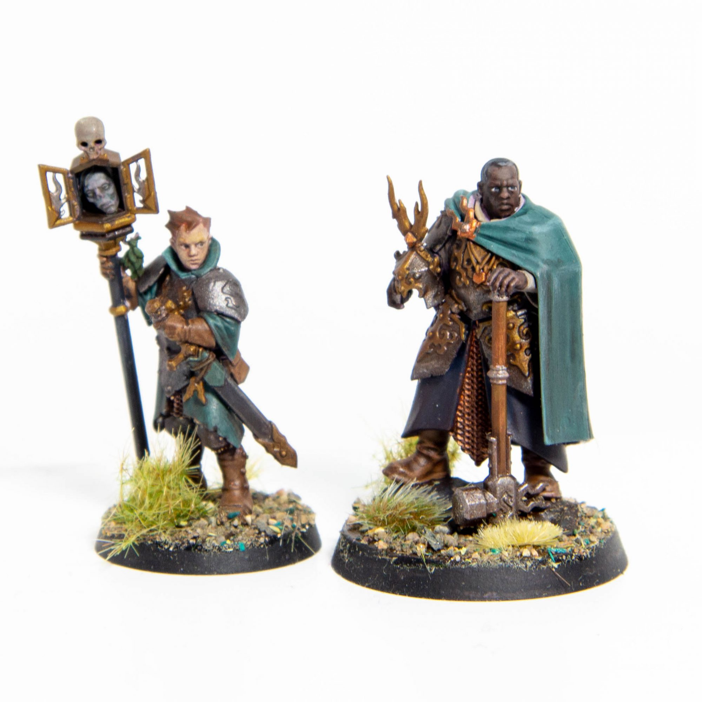
Cities of Sigmar Freeguild Marshal and Relic Envoy. Credit - SoggyThere’s just three Heroic Traits here, and they go on any non-Cogfort Heroes.
Stentorian General subtracts 1 from enemy Ward rolls provided the target units are visible, wholly within 12” of your Hero, and also in combat with a friendly Under Orders unit. That’s a lot of hoops to jump through, but against an army that relies on Ward saves, a melee-centric Cities of Sigmar army could be a real headache with this Trait.
Beloved Leader ignores negative hit and wound rolls for friendly units wholly within 12” of your Hero and also Under Orders. It’s a good way to anchor a force and prevent situations where your troops are stuck hitting on 5+.
Grizzled Drillmaster (not to be confused with Drizzled Grillmaster, Castellan of Flavortown) doles out a 6+ Ward save to friendly units wholly within 12” of your Hero and also Under Orders. That’s a solid durability buff to friendly units, and if you can slap that bonus onto a Cogfort, you’ll really make it a headache to remove. This is probably the most generalist of these Traits, and one that’s an easy pick.
Artefacts of Power
The Last Blade of Embergard is a simple melee buff, giving one non-Companion melee weapon +2 to Attacks and Rend. Put it on a Cavalier-Marshal and go to town.Bones of Saint Ignifus Gives +1 to a Casting or Chanting roll for an Under Orders unit wholly within 12”. It’s annoying that it requires Orders just to go off, and would have been more useful if it was just always on.
The Sphere Celestial is a wildly useful little teleport ability. Select a friendly Infantry or Cavalry Hero unit that is not in combat and is wholly within 18” of the bearer, then place the bearer and that unit on a target point anywhere on the battlefield provided it is more than 3” away from any enemy units or terrain features. This happens in the Hero phase and explicitly does not preclude you from moving in the Movement phase, so you can just yeet a beefy unit up the board, nab objectives, blast away at close range, or pull off a turn 1 Charge in your opponent’s backfield. An on-demand teleport that doesn’t keep you from moving, shooting, or charging is ridiculously powerful, especially compared to the other Artefacts here.
Ironweld Innovations
Ironweld Innovations are, probably not surprisingly, enhancements exclusively for Cogforts.Prototype Arco-Combustor Inhibitor is a once per game get out of jail free card for one of your Cogforts, giving them +3” of movement, letting them Retreat without taking any Mortal Damage, and then Shoot afterwards. It can really get your Cogfort out of a bind, or just get that extra few inches of movement to get onto an objective. It also gets around the drawbacks of their built-in retreat ability by not generating any Heat Tokens.
Emergency Bellows removes 1 Heat Token at the end of any turn. We’ll get to the Cogfort Heat Token mechanic later, but managing that Heat is important to your Cogforts, and removing 2 Tokens per round is handy. This is a pretty safe bet, as you’ll always be managing Heat on a Cogfort.
Grapple-Net Launcher is another once per game ability, this time subtracting 1 from Attacks on an enemy unit in combat, provided your Cogfort didn’t charge that turn. With how durable Cogforts are, this can absolutely stonewall an enemy attack, especially on a large unit where you’ll be taking Attacks off every model.
Spell Lore
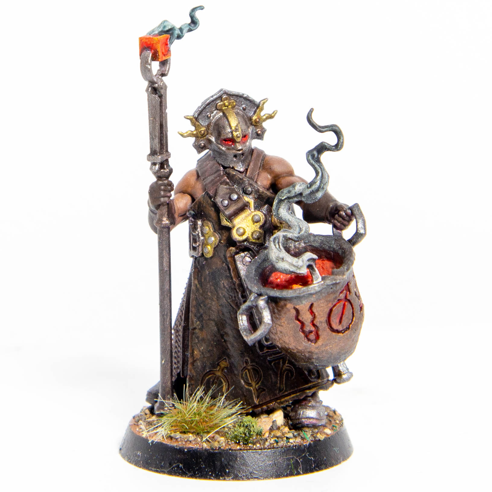
Cities of Sigmar Alchemite Warforger. Credit - SoggyThe Spells of the Collegiate Arcane each tie more or less to one of the Wizard models in the Cities of Sigmar range, but aren’t locked to any of them. They’re a decent spread of mobility, damage output, and friendly unit buffs.
Speed of the Twin-Tailed Comet (CV6, unlimited) – This is a wide movement buff, adding 3” of movement to every non-War Machine Cities of Sigmar unit wholly within 12” of the caster. With a few wizards you could really get a whole army moving quickly.
Curse of Scorched Metal (CV7) – This picks a single enemy unit within 18”, and until the start of your next turn, the first time they make an Attack ability, each unmodified hit roll of 1 causes 1 Mortal Damage to the target unit. It’s a hilarious molten middle finger to cast on any large unit that relies on volume of attacks, and since it works on shooting and melee, it’s versatile as well.
High Star’s Light (CV6) – This is a simple attack buff, adding +1 Attack to melee weapons on a friendly unit wholly within 12” until the end of the turn. That’s not too shabby, even if it’s not as interesting as the other two spells.
Prayer Lore
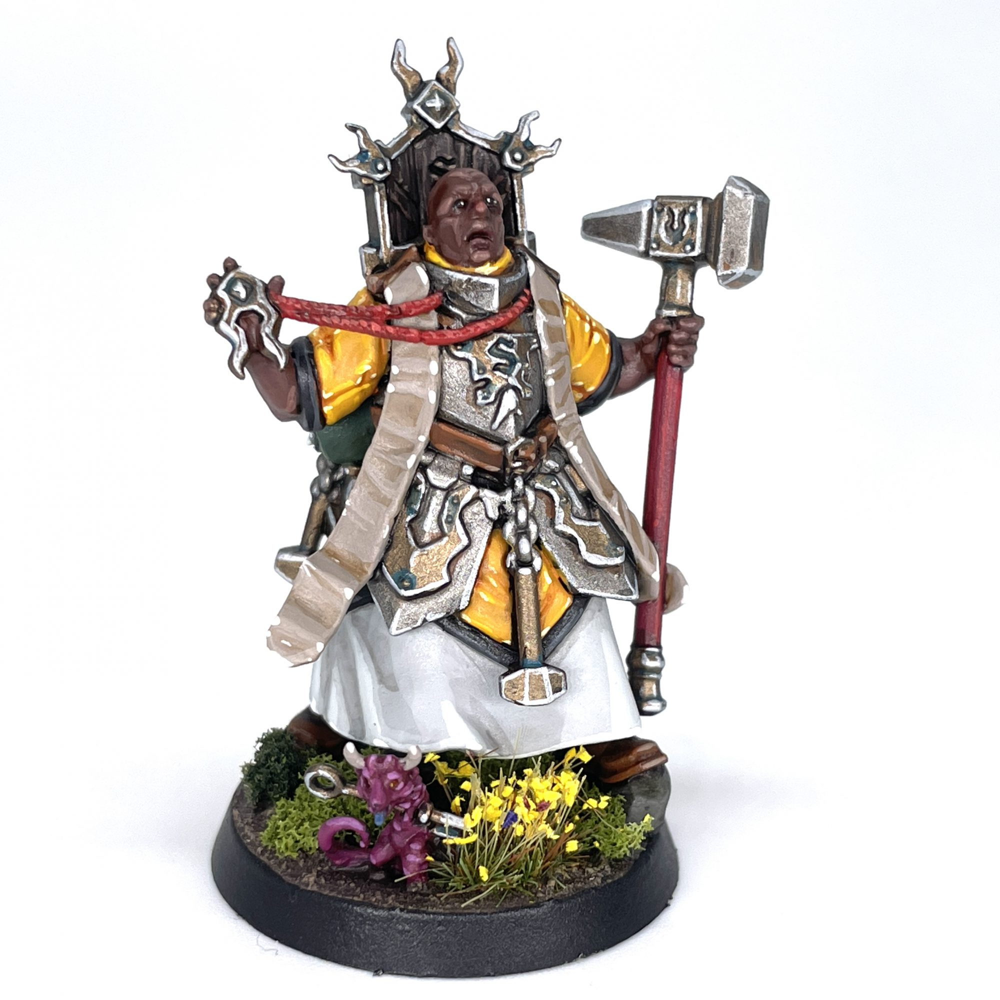
Cities of Sigmar Mallus Forgepriest. Credit: SRMThe Scriptures of Sigmar are all support abilities, granting extra defense, wound regeneration, and a debuff to enemy Control Score to boot.
Holy Aegis (CV3, unlimited) – Make a D6 chanting roll and select a friendly Cities of Sigmar wholly within 12”. They ignore the first first point of damage that would be inflicted on them in each phase until the start of their next turn. On a 7+, you can pick a second unit. This is extra gnarly on Cogforts, where some armies will really depend on phase-over-phase chip damage to take them out.
Reckoning of Sinners (CV5) – Make a D6 chanting roll and select a friendly Cities of Sigmar wholly within 12”. Enemy units have a maximum Control Score of 1 while in combat with the unit. On a 10+ you can pick a second unit as well. This is a great way to shut down an objective, or two if you’re lucky.
Benediction of the High Heavens (CV3) – Make a D6 chanting roll and select a friendly Cities of Sigmar wholly within 12”. Heal D3 on the target, and on a 7+, Heal D3 every friendly visible unit wholly within 12” of the caster instead. Chanting just to bring a Steelhelm back isn’t too exciting, but keeping your Cogforts topped off or setting off a healing bomb in the middle of your army are both far more interesting prospects.
Warscrolls
While most units still do the same jobs they always have, how they go about doing those jobs has changed significantly. This also sees the ousting of every Warhammer Fantasy Battle holdover unit, so there are no more Steamtanks, Duardin or Aelf units in the main army list. All of those go to Legends in June 2027. For those who want to retain the Cosmpolitain nature of the army there is a Regiment of Renown that keeps the spirit of it with Fyreslayers and Lumineth, and we'll get to it in that section.Interestingly, the Freeguild Command Corps has also been split into three units. This is a good compromise from the 3rd edition version of the unit, which had so many abilities on one scroll it could be hard to keep track of, but does deprive the army of one of its most notorious control pieces.
Unique Heroes
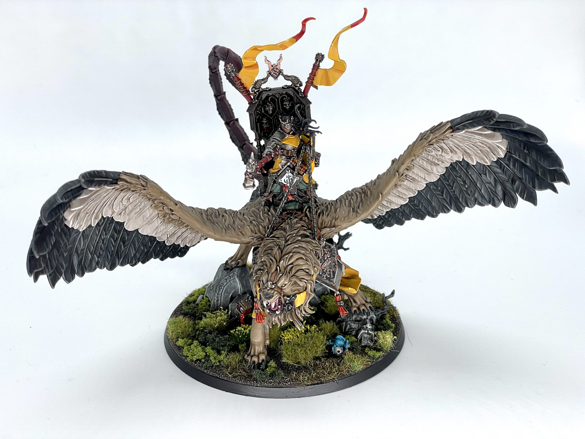
Tahlia Vedra, Lioness of the Parch. Credit: SRMTahlia Vedra is still your big heavy hitter here, riding a beatstick Monster in the form of Infernadine, plus some solid support abilities. Once per game in the Combat Phase, she can use her Lead From the Front ability to give +1 to hit and wound rolls for every friendly Sigmarite unit wholly within 12”, covering a pretty massive area. Paralysing Venom is a Rampage that has you roll a D6 while in combat with an enemy unit, and if you roll below their Health characteristic, they have to subtract 1 from their wound rolls for the rest of the turn. Considering most Monsters have significantly more Health than you can roll on a D6, that’s a pretty surefire way to protect yourself while fighting your opponent’s big centerpieces. Lastly is Combat Tactician, letting you select a Sigmarite Infantry unit wholly within 18”, letting them make a Normal Move, and then putting them Under Orders. Considering how important Orders are to making this army work and how few you get per turn, this is low-key her most important ability. She’s especially useful in an Infantry-heavy army this way, and it also lets you range out a little instead of having to bunch everybody up around a foot Marshal or something.
Pontifex Zenestra is a Priest (2) as you’d expect. She basically doles out the old Flagellant rule to any Sigmarite units wholly within 12” with her The Great Wheel Turns ability. When those models are killed in combat, make a Zealotry roll of D6 for each point of Health that model had. For each 6+, the attacking enemy unit takes a point of Mortal Damage. That’s obviously useful on cheap Steelhelms who can die in droves and cause some damage, but could also work on exploding cavalry or a Cogfort toppling onto an enemy unit. She’ll be best served by chanting her Warscroll prayer, Vessel of Sigmar, which can either add 1 to those Zealotry rolls, make enemy charging units within 9” Strike Last, or roll a D3 for every enemy Wizard and Priest on the field, and on a 2+, causing that much Mortal Damage. The only bit of dissonance is between her main ability suite and the Prayers available to this army, most of which emphasize survivability. She wants your units dying in droves to do their most damage, while most abilities in this Battletome try instead to keep your models alive. Stalwart Guardians is weirdly the Battle Trait she wants more than the faith-themed one, as it’ll do more good to get models back so you can toss them back into the grinder.
Jorvan Kreel, Heir of the Kraken is our new ranger character, essentially being Drizzt Do’Urden and Geralt of Rivia at the same time. He’s got a flurry of 6 damage 2 attacks, but after attacking, either Jorvan or a friendly non-Hero Infantry unit within 12” can redeploy within 6” of where they started and 3” away from all enemy units, making for an annoying little skirmisher who can scoot away before getting hit. He’s also got a cool ash panther named Thexa who can cause the standard D3 Mortal Damage on a 2+, but when used on an enemy unit, they can no longer score Critical Hits, counting as normal hits instead. That’s a hugely inconvenient debuff for some units. He’s missing an Infiltrate ability of his own, but he’s meant to run with Wildercorps Hunters who can bring him along to serve as an annoying little vanguard.
Erasmus Zonn, the Enlightened One is a Wizard (1) and can happily cast any of the spells in the Spell Lore, though he’s got his own spell to teleport himself in the Hero phase wholly within 9” of a table corner and more than 3” from enemy units. That’s decent for scoring some secondary objectives and is key to his main ability, Lantern of All-Knowledge. While in a table corner, he can make himself and friendly units within 6” invisible to enemy units outside 6”, add 1 to his own power level, add 2 to Arcane Manipulation rolls, or crank up his Rod of Radiance weapon with extra Attacks and Damage. This makes him a particularly scary shooting unit, but with only 10” of range he’s not going to have an easy time meeting all those criteria at once. Lastly, he’s got an Arcane Manipulation ability called Realmsphere Mastery that can target an enemy Manifestation within 12” that wasn’t set up this turn. If he rolls equal or above that Manifestation’s banishment roll on 2D6, you can set up your own Endless Spell in its place and banish the old one. Killing two birds with one realmstone like that is pretty notable, and unlike his other abilities, doesn’t depend on him being in a table corner. All this makes for a pretty powerful shooting unit and support caster, albeit one largely limited to the table corners where there isn’t as much action.
Galen and Doralia ven Denst celebrate bring your daughter to work day in style, hunting Wizards and Manifestations. Their weapons aren’t quite reliable enough to take out those targets on their own, but more importantly they can pick a friendly Sigmarite unit Under Orders within 12” and give them +1 Damage with combat attacks against Wizards, Priests, and Manifestations. While the days of Krondspine spam are behind us, tearing down Manifestations and Wizards with a mob of Damage 3 Gallants is very appealing. Units like this suffer from some matchups where their targets straight up don’t appear at all though, and if you’re up against an army without much in the way of Wizards or Priests, this pair really struggles to be of much use.
Callis and Toll are a pair of Hero hunters, picking an enemy Hero at the start of the game to be their Mark. Their melee weapons do double damage against the Mark, cranking them up to 4 damage per swing. Their weapons are also Anti-Wizard (+1 Rend) so if you’ve got a big bad enemy Wizard to worry about like Archaon or Teclis, they’re an especially fun pick, and have enough general use that they should be more broadly useful than the ven Densts.
Toll’s Companions are a package deal with Callis and Toll, giving both units the ability to deploy in In the Shadows. Instead of deploying as usual, in your Movement phase they set up more than 6” from the Mark and 9” from any enemy units. The Companions also give a 5+ Ward Save to Callis and Toll, getting the same in return. This means you can set up a nasty cruise missile of a unit, dropping 6” away from their Mark and making an easy charge into them whenever you’d like. Even with that Ward Save they probably won’t survive long after, but they provide a backfield threat your opponent will have to screen for.
Heroes
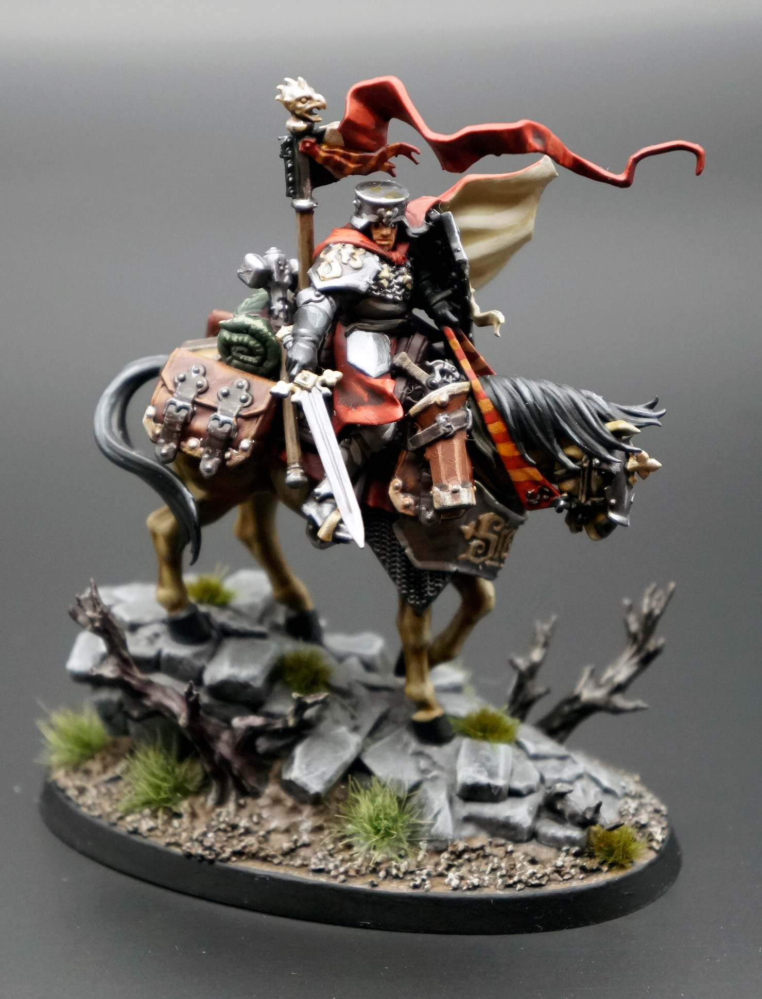
Conner TolbertFreeguild Cavalier Marshals are the rare model that supports friendly units without needing them to be Under Orders as well. He’s a decent enough combat character, at least for a regular guy on horseback, but his real power is in how he helps your Cavaliers. Firstly, if you successfully Counter-Charge with him, you can select a Sigmarite Cavalry unit wholly within 12”, and provided it didn’t Run that turn, that unit can Charge, and they get a re-roll on Charge distance to boot. Additionally, he can pick himself and 2 other non-Hero Sigmarite Cavalry units that charged, and provided they’re also wholly within 12”, they can make a pile-in move and maybe cause some mortal damage. He’s great for setting up a counter-charge behind your front line, not necessarily leading the charge from the front but reacting to enemy units getting into your grill. Even if Cavaliers and the Marshal aren’t the hardest hitting cavalry in the game, if your opponent was just expecting Fusiliers in melee, they’ll be sorely disappointed.
Freeguild Marshal and Relic Envoy is a standard foot Hero who isn’t especially tough or strong, but has some decent support abilities. First, they can hand out an extra Order to a unit within 18” using their Relic Envoy, which as we’ve already established, is pretty important. Second, once per game, an Infantry or Monster unit with the Relic Envoy can Fight immediately after the Marshal, also getting to Fight twice that phase. Their second Fight ability has Strike Last, but doubling up with your Gate Gargants, Tahlia Vedra, or just a big ol’ brick of Gallants can put out a wild amount of damage. They’ve also seen their profile flattened, and now they always get Duelling Pistols and a Master-forged Weapon, no need to choose their gear.
Mallus Forgepriests are your basic Priests on foot, chanting one Prayer per turn and Consecrating objectives. If the Priest is contesting an objective with no enemy models on it and you control it, it’s Consecrated, or on a 3+ if there are enemy models on it. Until your opponent controls said objective, all friendly Sigmarite War Machines gain a 6+ Ward Save while wholly within 6” of the objective, and all other friendly Sigmarites gain a 5+ Ward Save. This is a great way to spread some durability around, especially if you can get him up the board to Consecrate some objectives in No Man’s Land. These also combo well with your Prayers to make your units even more durable, and it should become pretty easy to give the bulk of your army a Ward Save of some variety.
Alchemite Warforgers are simple Wizard (1) casters who can roll a D6, and on a 3+ give melee weapons to a friendly unit within 12” Crit (Mortal) until your next turn. It’s a simple, solid buff that turns all those dinky Rend - and Rend -1 melee weapons in your army into something with more teeth.
Amethyst Knellmages are new, another Wizard (1) built around shutting down Commands. Their Warscroll spell, Deathly Candlelight, is a CR7 spell that disables Commands on an enemy unit within 12” for the rest of the turn. On a 3+, they can target a unit 18” away instead.
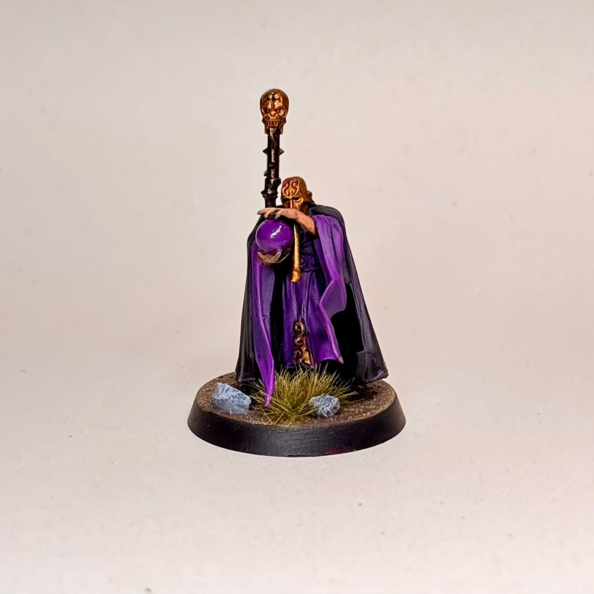
Amethest Mage:Credit: Gary Askham - Instagram: @heroes_guild_e17
Aqshian Pyrocasters are the last of these basic Wizard (1) Heroes, instead focusing on doing damage over time. Their spell, Incandescent Incineration, is a CR6 spell that causes D3 Mortal Damage and causes the target to be Incandescent. If cast on an Incandescent unit, they take a flat 3 damage points, with no Ward rolls allowed, and they’re no longer Indandescent. On an Arcane Manipulation roll of 3+, they can target enemy units within 18” instead of just 12”. It’s a fun setup and knockdown mechanic, but a canny player will either try and move outside of your range for that second Incandescent Incineration spell, or simply kill your extremely squishy wizard. Since it’s also not an Unlimited spell, you also can’t just have two Pyrocasters doubling up on a single target.
Fusil-Major on Ogor Warhulk is still a solid supporting character, and also not too bad at shooting and melee. Their Long Fusil is still decent for plinking wounds off Characters, and they can give +1 to hit against an enemy unit within 24” for all friendly units Under Orders. With how many of this army’s otherwise great weapons hit on a 4+, this is a massive boost to shooting output, especially if you can line up two or three shooting threats into an important enemy unit.
Infantry
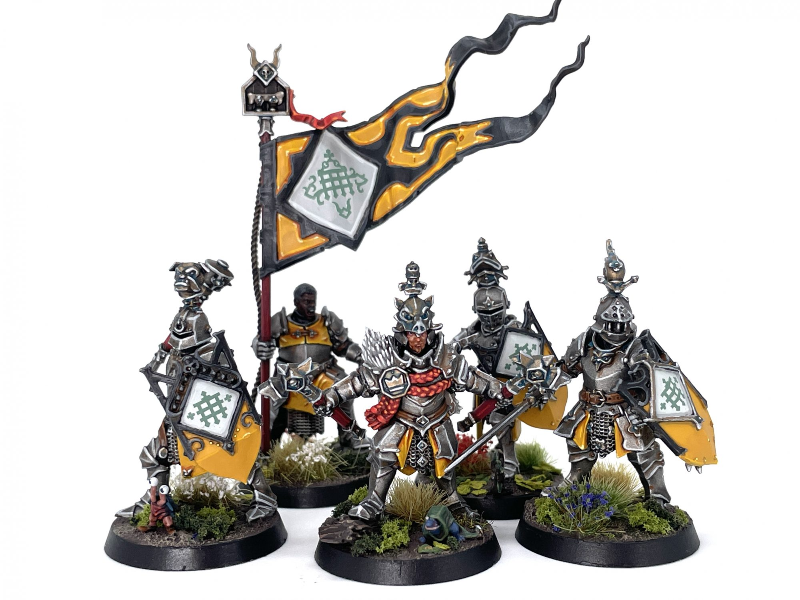
Cities of Sigmar Freeguild Gallants. Credit: SRMFreeguild Command Corps Adjutants are one third of the newly divided Freeguild Command Corps, and you must take all three when you take any of them. For the proper noun enthusiasts out there, this is the Arch-Knight, Great Herald, and Mascot Gargoylian. Once per turn, on a 3+, they add 5 to the control score of a friendly unit wholly within 12”. It’s not super exciting and they don’t do anything else of note, but could maybe flip an objective.
Freeguild Command Corps Auxiliaries consist of the Soul Shepherd and War Surgeon. This pair of weirdos messes with healing, with the Soul Shepherd disabling healing abilities on an enemy unit within 18” on a 3+, while the War Surgeon picks a friendly non-War Machine unit, and on a 3+ returns D3 dead infantry models, 1 cavalry model, or heals D3 wounds on a Hero or Monster. The 3+ roll is kind of annoying, but this is a fun pair for messing with casualties on both sides of the board. Against Death armies, the Soul-Shepherd is extra annoying, but with only 3 Health and a 6+ save per model, these will fold quickly.
Freeguild Command Corps Whisperblade rounds out the newly divided Warscroll, essentially working like Assassins did in old Warhammer Fantasy. If they’re within combat range of a friendly Infantry unit with 3 or more models, the Whisperblade straight up cannot be targeted with ranged or melee attacks. Unfortunately with only 4 attacks, only wounding on 4+, they’re not liable to do all that much damage, even if they’re safe from reprisal.
Freeguild Steelhelms are your bread and butter infantry, and are still largely there to hold objectives and die so your more valuable guns can keep firing. They lost their old ability to Consecrate ground (that went to the Mallus Forgepriest) and instead have a new ability, Steel of Helm and Heart. Provided you have at least 5 models in the unit, they pick a unit they’ve engaged in combat and on a 4+ (or 5+ if it’s a monster) then that unit must pile in and attack this unit. If they're Under Orders, it happens automatically. It’s a coin toss without Orders, but the notion of forcing attacks on these idiots instead of your more valuable units in combat is a good one. This is a potentially powerful means of wasting your opponent’s attacks, especially if it goes off on one of their more elite units. It's worth jumping through that Orders hoop to make it happen.
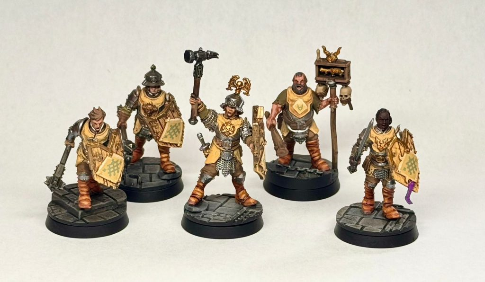
SteelhelmsCredit: Gary Askham - Instagram: @heroes_guild_e17
Freeguild Gallants take the old role of Greatswords, Dreadblades, and all the other platemail infantry with decent weapons. At 2 Health and a 3+ save, these knightly infantry are a solid, durable anvil to build your army on, serving as an anchor at the center of your line. They gain +1 to their Attacks and Damage on turns they don’t charge, and while Under Orders, every other non-Gallant Sigmarite unit gains Anti-charge (+1 Rend) while wholly within 12” of this unit. It’s a hefty amount of anti-charge tech, and they really want to stand out in the middle of your line, taking charges, hitting back hard, and inspiring everybody nearby to hit back even harder. Of all your melee options, these are the guys and gals who will benefit most from being Under Orders, especially Hurl Them Back! And Into Them, You Dogs!
Freeguild Grenadiers are a new melee-shooting combo unit, less durable than Fusiliers but with shorter ranged weapons and decent melee output. They’ve got access to fairly inaccurate but dangerous Bardiches in melee, as well as a flamethrower-touting Cindergout. That model can pick a terrain feature or objective contested by your Grenadiers, then every enemy unit on it takes D3 Mortal Damage on a 2+. That can spread a load of damage around, and this unit can easily move up, pepper some shots at an enemy unit, charge onto an objective, do a bunch of damage in melee, then burn everything around them. Cities of Sigmar don’t have a ton of units who are threatening in multiple phases like this, and causing damage - even if it’s just chip damage - in multiple phases can be extremely useful for taking down bigger targets.
Freeguild Fusiliers saw a remix of their old Fortified ability. Now when they’re Under Orders they subtract 1 from the Rend of incoming attacks (shooting and melee) and can shoot in combat with their Fusil-Cannons. Those also were simplified - now they just get 1 shot at 18” instead of the previous 2 shots, but wound on a 2+ now at Rend 2. Their Squire can also be burned to give them an extra point of Rend for one round of shooting, which is a load more useful than the old single reroll. What they lose in volume they make up for in quality, and if you can boost their accuracy they can become rather frightening.
Wildercorps Hunters are another mixed melee and shooting unit, having had their rules completely remixed since the Faction Pack. They lost their old Arbalest and the dogs got a little less toothsome in melee, they no longer have a pre-game move, and they also don’t get that boost to Rend when shooting from a piece of terrain. However, now they Scout Ahead, letting them deploy in reserves and arrive within 9” of a battlefield edge and more than 9” from any enemy units. They can also bring a pair of non-Monster, non-War Machine units along, letting you flank with your Wildercorps and some supporting units. The obvious pick is to bring along Jorvan Kreel, as his abilities sync up pretty well with theirs, and maybe some Grenadiers for a mobile shooting threat.
Cavalry
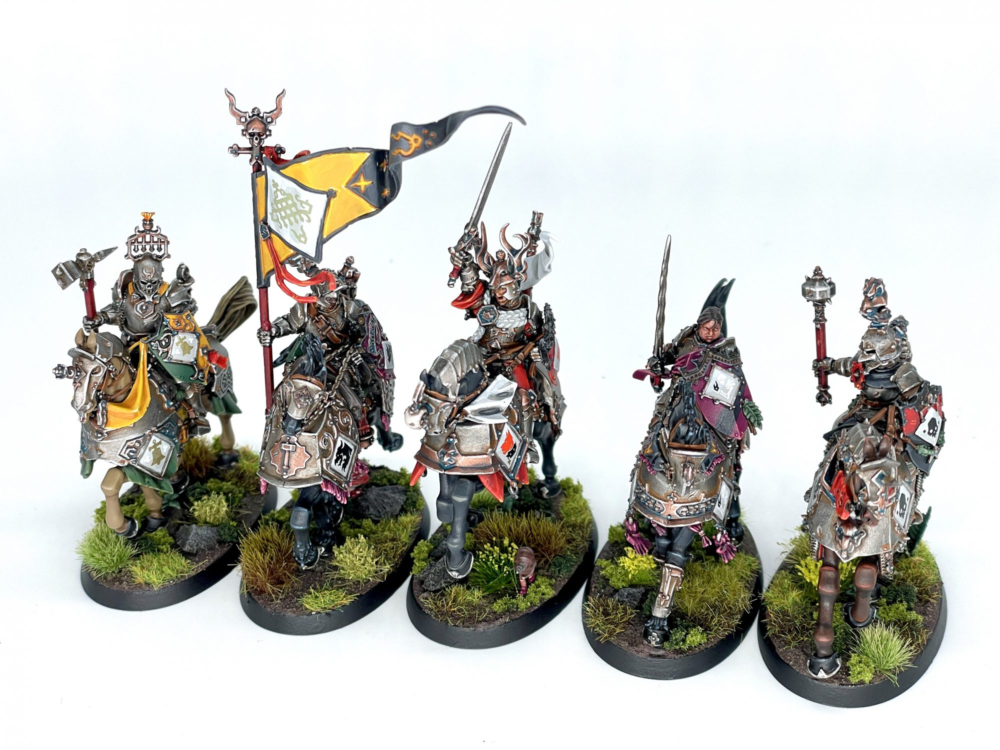
Cities of Sigmar Freeguild Cavaliers. Credit: SRMFreeguild Cavaliers are the only non-Hero cavalry in the army, and still suffer from only wounding on 4+, even if they do get Damage 2 on the Charge. They lost their impact hits, but they do get a built-in ability to cycle charge called Storm of Steel. If they’re engaged with an enemy unit and Under Orders (or on a 3+ if they’re not) they and a Freeguild Cavalier-Marshal within their combat range can immediately make a Charge move into another enemy unit. If they still caused impact hits this would be a far sight better, but means they can charge into some chaff unit then run off into something more advantageous the next Charge phase, staying mobile and keeping that Damage bonus going. They’re still best for clearing stragglers and taking out screens, with their ability to ping pong around keeping them from getting bogged down.
Monsters
Gate Gargants are another new unit, a pair of big ol’ Gargants capable of dealing some hurt in both shooting and combat. None of their attacks are particularly accurate, but they range from D3 to flat 3 Damage and have decent volume (5 of each) to make up for it. Their main role is instead to distract the enemy. If they’re in combat with an enemy unit, up to 3 friendly units also in combat with said unit can Retreat, Shoot, and Charge that turn, also taking no Mortal Damage for said Retreat. That’s especially good for your Cogforts, so keep these close. If that’s not enough, they hand out +2 to Charge rolls on a friendly non-War Machine unit wholly within 12”, letting you slingshot out that unit of Cavaliers. It’s a weird unit meant to distract enemy units, but unless they themselves get charged, that Aggressive Defenders rule isn’t liable to come up. They kind of do a little of everything, with short range shooting, heavy hitting melee weapons, charge buffs, and anti-charge support.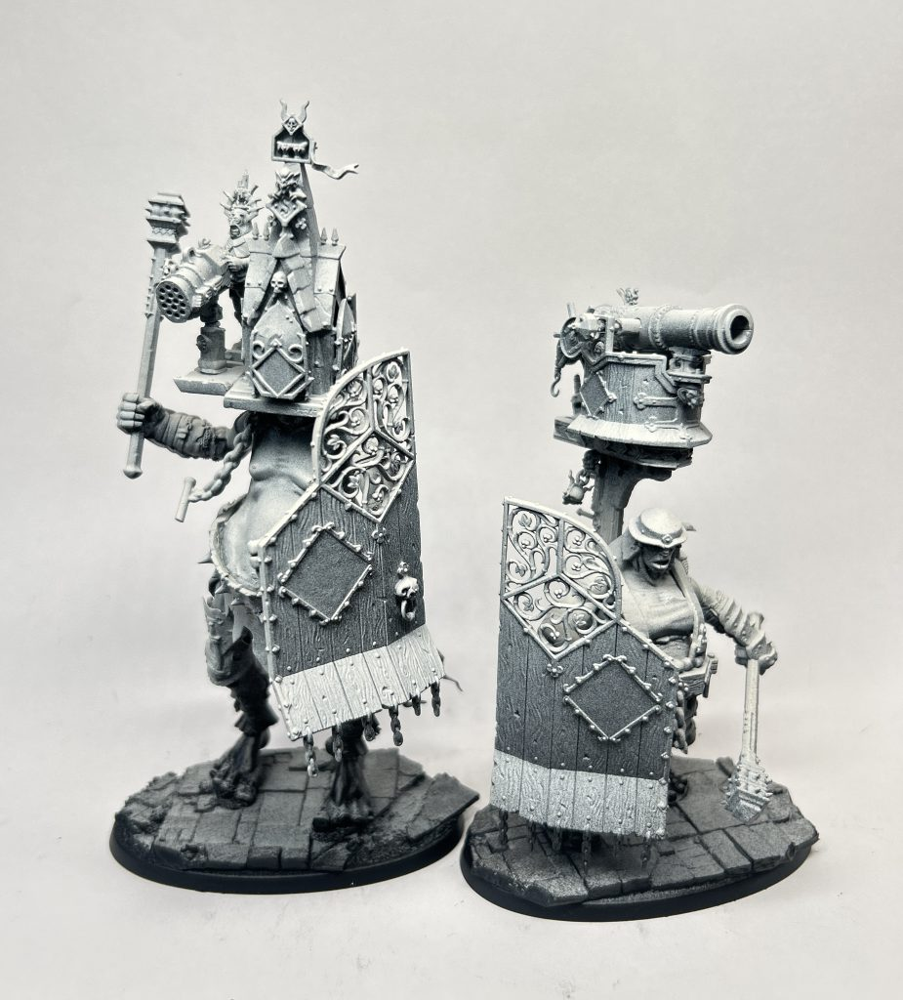
Gate GargantsCredit: @badusernametag
War Machines
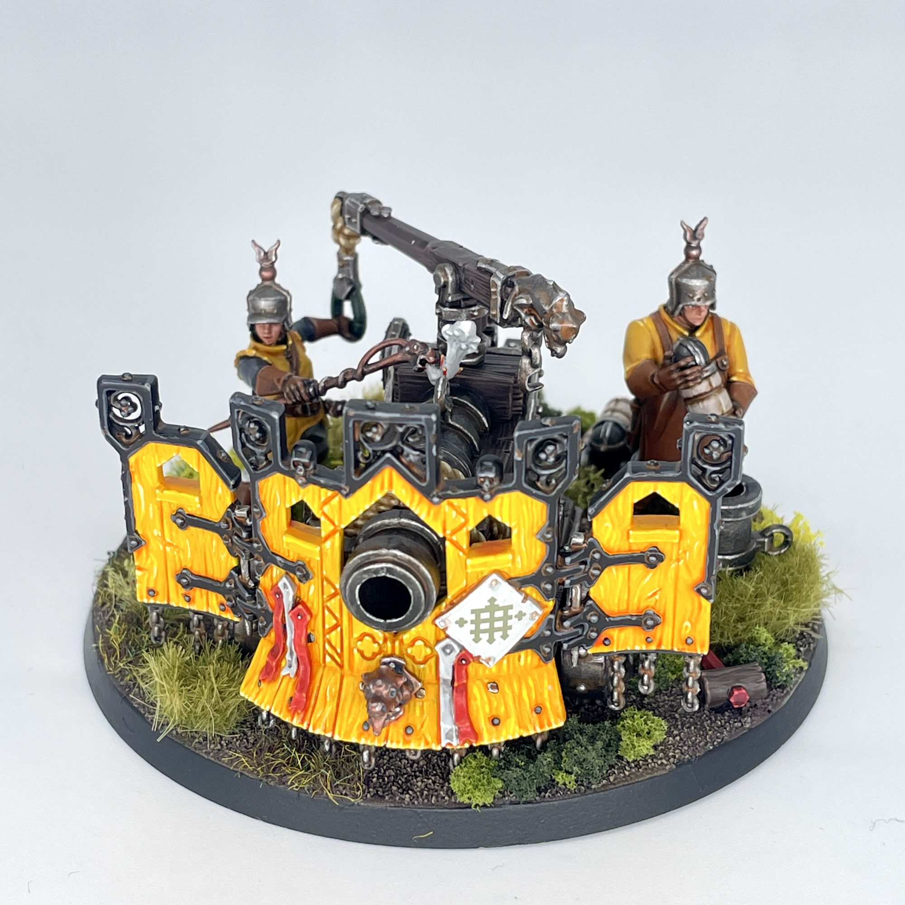
Cities of Sigmar Ironweld Great Cannon. Credit: SRMIronweld Great Cannons lost their Grapeshot but gained an extra cannonball shot for their troubles. They dropped to just 6 Health, and like with the Fusiliers, they lost their old Fortify Position ability. On the plus side, they gained a pinning effect. On a 3+ (or 2+ if they're Under Orders) then a unit they shot at subtracts 2 from charge and run rolls til your next turn. They absolutely need the Fusil-Major’s hit buff or a Take Aim! Order to make up for their dismal 4+ hit rolls, and given their variable D3+2 damage and the extra dieroll needed to see if they pin their target, it all makes for a pretty unreliable unit, especially compared to the other War Machines on offer.
Cogforts
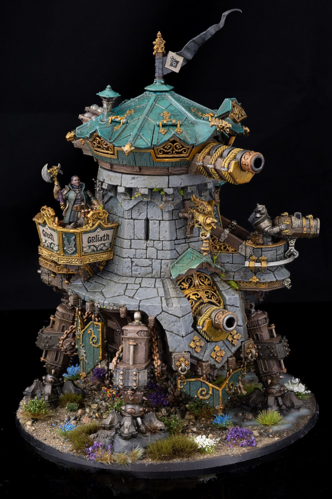
Vindicarum Cogfort. Credit - SoggyBoth of these Cogforts are insane, with 25 wounds and a 3+ save. They also share some of the same weapons, with their Crushing Iron Feet causing 4 Damage per attack, as well as the Crew’s Leadshotters offering them some Shoot in Combat support. They’ve also both got the Overheating mechanic, wherein they build up Heat Tokens based on the actions on their Full Power and Full Throttle tables. Then after resolving that table, you roll a D6 for each token accumulated, and on each 5+, take a point of damage with no Ward Saves allowed, then remove a token. This is a fun mechanic, and one that can definitely punish you for going too hard, as that damage is resolved in the Hero phase. They’re also available in both player turns, letting you react to whatever the situation calls for while also potentially causing yourself even more Heat and even more damage. Cogforts are also both Hero units, letting them take the Ironweld Innovations Enhancements, but more crucially that gives your opponent an easier means of damaging them. There’s more anti-Hero tech than anti-War Machine tech out there, so keep that in mind while protecting your walking castles.
Cannonade Cogfort is the longer ranged variant, loaded up with an anti-infantry Breacher Cannon and an anti-everything-else Godbreaker Cannon. This is the rare Damage 4 ranged weapon, which is frankly kinda nuts on its own, but if this thing is Under Orders you can buff that Godbreaker even further. On a 3+, it can either subtract 1 from Ward Rolls, go up to Rend -3, or do D3 mortal damage on every enemy unit in combat range of its target. As for its Full Power table, for 1 Heat Token it can reduce hit rolls by 1 against friendly Under Orders units wholly within 12”, for 2 it can move 10”, for 3 it can re-roll a hit and wound roll for the Godbreaker Cannon, and for 6 it can Shoot after Retreating. Protecting your surrounding units for a single Heat Token is solid, but you’ll be using that hit buff one more often. Having an escape plan built in is also extremely useful for keeping your guns firing and your Cogfort safe, just mind the 6 Heat it generates..
Conqueror Cogfort trades some firepower for cargo capacity and a giant 6D6 shot flamethrower. One Sigmarite Infantry unit and one Sigmarite Infantry Hero can be loaded up inside. They pile out within 6” during any Charge phase, and that can put them into combat with enemy units, in which case they have Charged and they’re Under Orders. Dump out a wall of Gallants and a Hero to hold the line in front of Howl’s Shooting Castle here, then keep on trundling along and burnintating the countryside. The Full Charge table resembles the other Cogfort table, but with a few changes. For one Heat Token, those infantry piling out get +1 Damage on the charge, which is a great pick every time. It too has a 10” move for 2 Heat Tokens, and for 3 Tokens you can gain 2 attacks to both the Crew’s Leadshotters and Crushing Iron Feet. For 4 tokens you can automatically fire 22 shots with the Realmscorcher Flame Cannon, but the average roll for 6D6 is 21, so unless your dice are extremely cold that day it’s not worth the Heat. Lastly is the same ability to Retreat and shoot for 6 Heat Tokens, which is always handy to keep from getting locked down. You’ll generally be using that first ability the turn you disembark your cargo, then the 3 Token ability once you’re actually getting stuck in.
Faction Terrain
The newly minted Dawner’s Triumph gets physically hauled around by your Infantry, essentially moving 6” while hanging out within 3” of an Infantry unit. You’ll want to carry that buff around, as it picks an enemy unit within 6” and gives friendly Infantry and Cavalry units Crit (Auto-Wound) on their melee weapons targeting that unit. That only triggers on a 3+, but if the Dawner’s Triumph is in combat, it triggers automatically. It’s a weird little unit to haul around and not particularly hard to kill, but with the high volume of middling attacks your infantry put out, it can definitely pump up their damage output.How They’ll Play
This version of Cities of Sigmar seems determined to stay much more mobile than its last iteration, while still being a defensive, reactive force. Expect walls of Gallants and Steelhelms advancing under a blanket of fire from Fusiliers and Cogforts, only to take the charge, react with orders like Into Them, You Dogs!, and sequence a number of attacking units to destroy whatever made the mistake of charging your walking castle. Of course, that wall of infantry (or Gate Gargants) won’t go down easily, thanks to the help of Mallus Forgepriests. Meanwhile, Cavaliers can react to charges elsewhere on the line, while Wildercorps take along units of Grenadiers to go deep behind enemy lines. It’s an army that will be able to control the board just with the large footprints of their units, but those units will struggle in isolation. Stacking buffs from characters and Orders are going to be how you actually do damage here, and without those, it’s going to be a lot of rolling 4+ and hoping for the best. The Orders also encourage taking a wide variety of units, so just spamming walls of Fusiliers or waves of Cavaliers likely won’t be the path forward. This is a truly combined arms force, and one where taking one of everything won’t actually be to your detriment.Alternatively, you can just take 4 Cogforts and pretend you’re playing Imperial Knights; the world’s your oyster.
Armies of Renown
There are two Armies of Renown, one representing the cosmopolitan nature of the Cities of Sigmar, while the other is Oops! All Cogforts!The Iron March
If you just wanted to run Cogforts, well, here you go. In addition to the Cogforts we already have, there’s also a pair of remixes in the form of the Conqueror Cogfort and Linebreaker Cogfort. These are just the Cannonade and Immolator Cogforts but with their Siegebreaker Cannons and transport capacities swapped. In addition to those four Cogfort variants, you can take a Mallus Forgepriest and a unit of Gallants for each Conqueror or Linebreaker Cogfort you take. While they don’t get the same suite of Orders as the main army, they can still put units Under Orders with their Battle Trait, which is mostly useful for making your Gallants hit harder. They get access to three tables of enhancements, most of which are just characterful but some of which have some power behind them. In particular, I like Battle-Priest Solantra Whyl, an upgrade that makes a Cogfort a Priest (1), as well as Engineer Kirsta Loudren, who lets your Cogfort explode when it dies, causing Mortal Damage to everything in combat range. That Priest upgrade is a good one here, as are Mallus Forgepriests, because this Army of Renown gets a unique CV4 Unlimited prayer called The Chant of Iron. It can debuff movement of an enemy unit by 2” which is alright, but more importantly can Heal D3 on one of your units, or all friendly units within 12” on a roll of 8+.Allies of the Free Cities
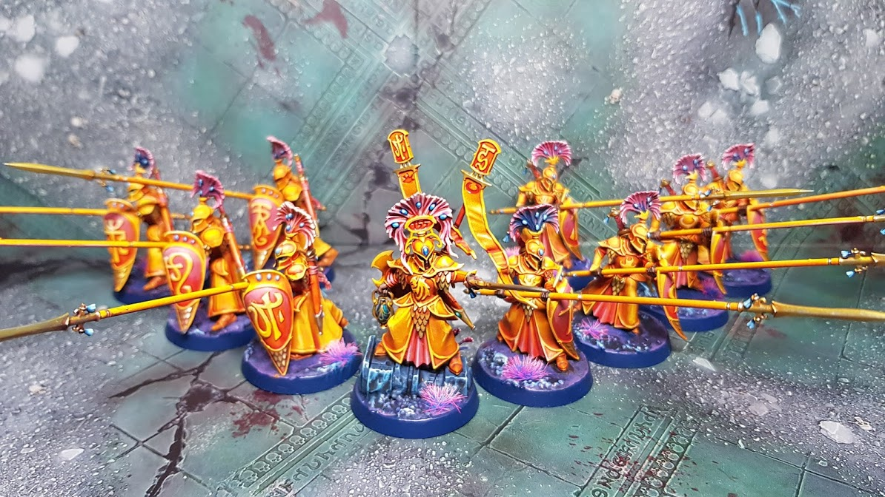
Vanari Auralan Wardens. Credit: RachelWith the removal of every Aelf and Duardin unit from the book, this is your way of getting that Grand Alliance flavor back into the army. You’re allowed to take any non-unique Sigmarite units, as well as Auric Hearthguard and Vulkyn Flameseekers from the Fyreslayers, plus Vanari Auralan Wardens and Vanari Auralan Sentinels from the Lumineth. Of course, for each of those units you take, you need to take a Sigmarite unit as well. You get to put units Under Orders, and while you don’t get access to the default Orders here, when the various allied units are Under Orders they get some kind of unique bonus. These are unexpected abilities, like every Auric Hearthguard critical hit with their ranged weapons reducing the movement of their target unit (cumulatively with no minimum!), or the Flameseekers literally defanging a Monster in combat and reducing the Damage of Companion Attacks by 2. The Vanari abilities are more situational, removing charge bonus damage against the Wardens and extending the range of Sentinels, albeit with a hit debuff. If you form the Triforce and have one of each (Sigmarite, Duardin, Aelf) unit wholly within 12” of one another, you get the Forces of Order ability. All three units get a 5+ Ward against shooting, add 3 to their control score, and get +1 to wound in combat. It’s tricky to set up but a wild set of buffs that will absolutely beef up your otherwise merely okay infantry. The suite of enhancements, spells and the like tend to mess with objective control scores (yours and your opponent’s) while also letting you redeploy more effectively and spread more instances of Under Orders around. The challenge with this regiment is finding unique roles for those allied units that aren’t just covered by your bevvy of Sigmarite units already, but the wide-ranging bonuses from Forces of Order certainly make a case for putting that together.
Regiments of Renown
Rogue Engine
This is just an excuse to put an Outlaw Cannonade Cogfort into another army, and it can go into literally any army in the game. It loses its Heat Token mechanic and instead can hand out a buff to a non-Unique unit wholly within 12”. These are super versatile, so you can add +1 to wound rolls for combat attacks, make a unit impossible to be targeted with ranged attacks, buff up their control score, or give them a few movement buffs. There aren’t many armies who wouldn’t like to have a Cogfort stomping around, and those support abilities make them that much more useful.Cogfort Raiders
Similarly, this lets you take an Outlaw Conqueror Cogfort and also slot it into any army in the game. It also loses its Heat Token mechanic and carries over the same transport abilities as its more law-abiding counterpart in the main army, including the +1 Damage in melee for units that pile out. For armies full of fragile infantry like Daughters of Khaine, I can definitely see the use case for putting your squishy infantry inside a steel and stone shell.Van Denst’s Hounds
This is a pretty simple addition of Galen and Doralia ven Denst and a unit of Wildercorps Hunters, and they can go in any Order army. So long as they’re in combat range with each other, no Manifestations can be set up within 12” of either unit. While outflanking with the Wildercorps is a very fun and useful ability, I don’t think either unit is that great on its own and I can’t imagine them being especially useful in any of the armies they can slot into. Spell hunters are all well and good, but I feel like most of these armies benefit more from just taking a Wizard to unbind spells instead.Reinholt’s Sharpshooters
Also slotting into any Order army is this tidy little gunline of a Fusil-Major, Ironweld Great Cannon, and 10 Fusiliers. Their non-Hero models gain +1 to hit if any enemy models were killed by another unit in the Regiment that turn, a solid ability that’s very easy to set up. They also count as Under Orders if they’re all in combat range together, so you’re encouraged to set them up in one big block and start blasting away. These guys actually do serve a distinct and general purpose, shoring up shooting in armies that might struggle putting out much damage at range.Final Thoughts
If their previous Battletome felt like a bridge between The Old World and the new, this feels like the true arrival of the Cities of Sigmar in the Mortal Realms. It only took four editions, but they’re finally a complete army, without any of the baggage of the past. There’s likely to be some tension between the various flavors of infantry with somewhat similar jobs, especially factoring in their Regiments of Renown, but Cogforts tower above that and give Cities of Sigmar a unique centerpiece that really sets them apart. The adherence to the mobile fortress theme runs through nearly every unit in this book, and arrives at something that isn’t just Warhammer Fantasy Empire or Warhammer 40k Astra Militarum, but something unique: Not a gunline, but a walking castle.Have any questions or feedback? Drop us a note in the comments below or email us at contact@tabletopbattles.com. Want articles like this linked in your inbox every Monday morning? Sign up for our newsletter. And don’t forget that you can support us on Patreon for backer rewards like early video content, Administratum access, an ad-free experience on our website, and subscriber-only content covering competitive Warhammer 40K!
Originally published on Goonhammer.


{kind=link}
{kind=link}
{kind=link}
{kind=link}
{kind=link}
{kind=link}
{kind=link}
{kind=link}
{kind=link}
{kind=link}
{kind=link}
{kind=link}
Leave a Comment